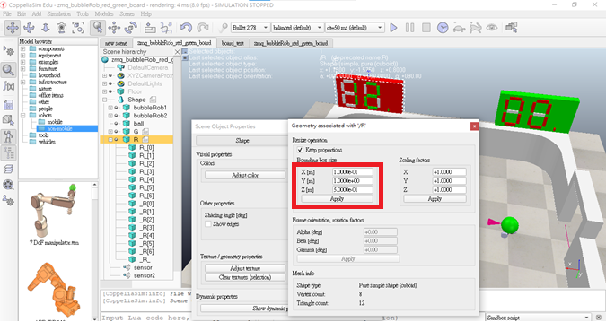

About <<
Previous Next >> w9
pj2
分工情況:
40723217
40923219
40923225
40923246
1.繪製得分記分板
使用CoppeliaSim繪製記分板
記分板尺寸

記分板檔案
2.記分板程式
function sysCall_init()
bubbleRob1 = sim.getObject('./bubbleRob1')
bubbleRob2 = sim.getObject('./bubbleRob2')
sensor = sim.getObject('./sensor')
sensor2 = sim.getObject('./sensor2')
ball = sim.getObject('./ball')
pos1 = {-1,0,0.15}
pos2 = {1,0,0.15}
posS = {0,0,0.15}
ang1 = {0,0,0}
ang2 = {0,0,3.14}
bubbleRobBase = 4
initialBubbleRobPosition = sim.getObjectPosition(bubbleRobBase, -1)
initialBubbleRobOrientation = sim.getObjectOrientation(bubbleRobBase, -1)
initialballPosition = sim.getObjectPosition(ball, -1)
initialballOrientation = sim.getObjectOrientation(ball, -1)
count = 14400
score1 = 0
score2 = 0
score3 = 0
score4 = 0
s0={1,1,1,1,1,0,1}
s1={0,0,1,1,0,0,0}
s2={0,1,1,0,1,1,1}
s3={0,0,1,1,1,1,1}
s4={1,0,1,1,0,1,0}
s5={1,0,0,1,1,1,1}
s6={1,1,0,1,1,1,1}
s7={0,0,1,1,1,0,0}
s8={1,1,1,1,1,1,1}
s9={1,0,1,1,1,1,1}
s={s0,s1,s2,s3,s4,s5,s6,s7,s8,s9}
for j = 0,6,1 do
a = sim.getObject('./_G['..j..']')
if (s[1][j+1]==1) then
sim.setShapeColor(a, nil, sim.colorcomponent_ambient_diffuse, {1, 0, 0})
else
sim.setShapeColor(a, nil, sim.colorcomponent_ambient_diffuse, {1, 1, 1})
end
end
for j = 0,6,1 do
b = sim.getObject('./G_['..j..']')
if (s[1][j+1]==1) then
sim.setShapeColor(b, nil, sim.colorcomponent_ambient_diffuse, {1, 0, 0})
else
sim.setShapeColor(b, nil, sim.colorcomponent_ambient_diffuse, {1, 1, 1})
end
end
for j = 0,6,1 do
d = sim.getObject('./_R['..j..']')
if (s[1][j+1]==1) then
sim.setShapeColor(d, nil, sim.colorcomponent_ambient_diffuse, {0, 1, 0})
else
sim.setShapeColor(d, nil, sim.colorcomponent_ambient_diffuse, {1, 1, 1})
end
end
for j = 0,6,1 do
c = sim.getObject('./R_['..j..']')
if (s[1][j+1]==1) then
sim.setShapeColor(c, nil, sim.colorcomponent_ambient_diffuse, {0, 1, 0})
else
sim.setShapeColor(c, nil, sim.colorcomponent_ambient_diffuse, {1, 1, 1})
end
end
end
function sysCall_actuation()
result = sim.readProximitySensor(sensor)
print(s[i])
if(result>0)then
sim.setObjectPosition(ball, -1, initialballPosition)
sim.setObjectOrientation(ball, -1, initialballOrientation)
sim.setObjectPosition(bubbleRob1, -1, pos1)
sim.setObjectPosition(bubbleRob2, -1, pos2)
sim.setObjectOrientation(bubbleRob1, -1, ang1)
sim.setObjectOrientation(bubbleRob2, -1, ang2)
score1 = score1 + 1
if (score1 <= 9) then
i = score1 +1
for j = 0, 6, 1 do
a = sim.getObject('./_G['..j..']')
if (s[i][j+1] == 1) then
sim.setShapeColor(a, nil, sim.colorcomponent_ambient_diffuse, {1, 0, 0})
else
sim.setShapeColor(a, nil, sim.colorcomponent_ambient_diffuse, {1, 1, 1})
end
end
elseif (score1 > 9 and score2<=9) then
score1 = 0
for j = 0, 6, 1 do
a = sim.getObject('./_G['..j..']')
if (s[1][j+1] == 1) then
sim.setShapeColor(a, nil, sim.colorcomponent_ambient_diffuse, {1, 0, 0})
else
sim.setShapeColor(a, nil, sim.colorcomponent_ambient_diffuse, {1, 1, 1})
end
end
score2 = score2 + 1
i = score2 +1
for j = 0, 6, 1 do
b = sim.getObject('./G_['..j..']')
if (s[i][j+1] == 1) then
sim.setShapeColor(b, nil, sim.colorcomponent_ambient_diffuse, {1, 0, 0})
else
sim.setShapeColor(b, nil, sim.colorcomponent_ambient_diffuse, {1, 1, 1})
end
end
else
sim.pauseSimulation()
end
end
result2 = sim.readProximitySensor(sensor2)
if(result2>0)then
sim.setObjectPosition(ball, -1, initialballPosition)
sim.setObjectOrientation(ball, -1, initialballOrientation)
sim.setObjectPosition(bubbleRob1, -1, pos1)
sim.setObjectPosition(bubbleRob2, -1, pos2)
sim.setObjectOrientation(bubbleRob1, -1, ang1)
sim.setObjectOrientation(bubbleRob2, -1, ang2)
score3 = score3 + 1
if (score3 <= 9) then
i = score3 +1
for j = 0, 6, 1 do
c = sim.getObject('./_R['..j..']')
if (s[i][j+1] == 1) then
sim.setShapeColor(c, nil, sim.colorcomponent_ambient_diffuse, {0, 1, 0})
else
sim.setShapeColor(c, nil, sim.colorcomponent_ambient_diffuse, {1, 1, 1})
end
end
elseif (score3 > 9 and score4<=9) then
score3 = 0
for j = 0, 6, 1 do
c = sim.getObject('./_R['..j..']')
if (s[1][j+1] == 1) then
sim.setShapeColor(c, nil, sim.colorcomponent_ambient_diffuse, {0, 1, 0})
else
sim.setShapeColor(c, nil, sim.colorcomponent_ambient_diffuse, {1, 1, 1})
end
end
score4 = score4 + 1
i = score4 +1
for j = 0, 6, 1 do
d = sim.getObject('./R_['..j..']')
if (s[i][j+1] == 1) then
sim.setShapeColor(d, nil, sim.colorcomponent_ambient_diffuse, {0, 1, 0})
else
sim.setShapeColor(d, nil, sim.colorcomponent_ambient_diffuse, {1, 1, 1})
end
end
else
sim.pauseSimulation()
end
end
end
-----------
5/5加入第一版記分板
問題1:第一版記分板顯示異常，每次進球後記分板，只會閃爍一格。
問題2:車子進球門，也會計分。
*(影片)*
5/11第二版記分板
解決問題:1.第二版改善了第一版的顯示異常，能夠正常做動。
保留問題:1.車子與球進球會計分，還沒改善。
*(影片)*
About <<
Previous Next >> w9